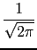
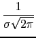
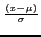

suivant: Fonction de répartition de
monter: Les fonctions de répartition
précédent: Fonction de répartition inverse
Table des matières
Index
Densité de probabilité de la loi normale : normald
normald(x) est la densité de probabilité de la loi normale
centrée réduite (de moyenne 0 et d'écart-type 1).
normald(x), est égale à
e -x22.
-x22.
normald(
 ,
, ,x) est la densité de probabilité de la loi normale
de moyenne et d'écart-type ,
,x) est la densité de probabilité de la loi normale
de moyenne et d'écart-type ,
normald(
,,x), est égale à
e-()2
On tape :
normald(1)
On obtient :
exp(-1/2)/sqrt(2*pi)
On tape :
normald(2,1,3)
On obtient :
exp(-1/2)/sqrt(2*pi)
Documentation de giac écrite par Renée De Graeve